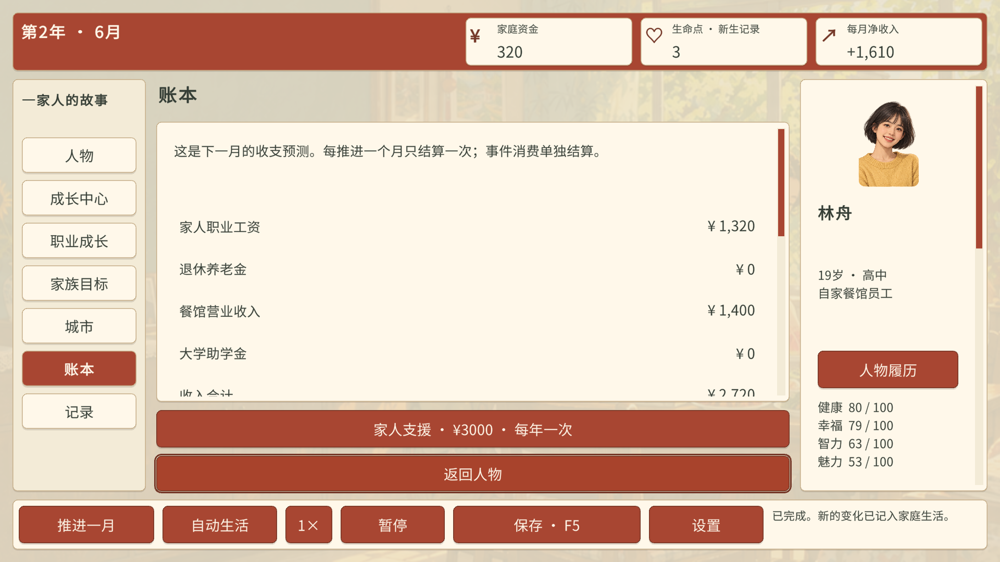
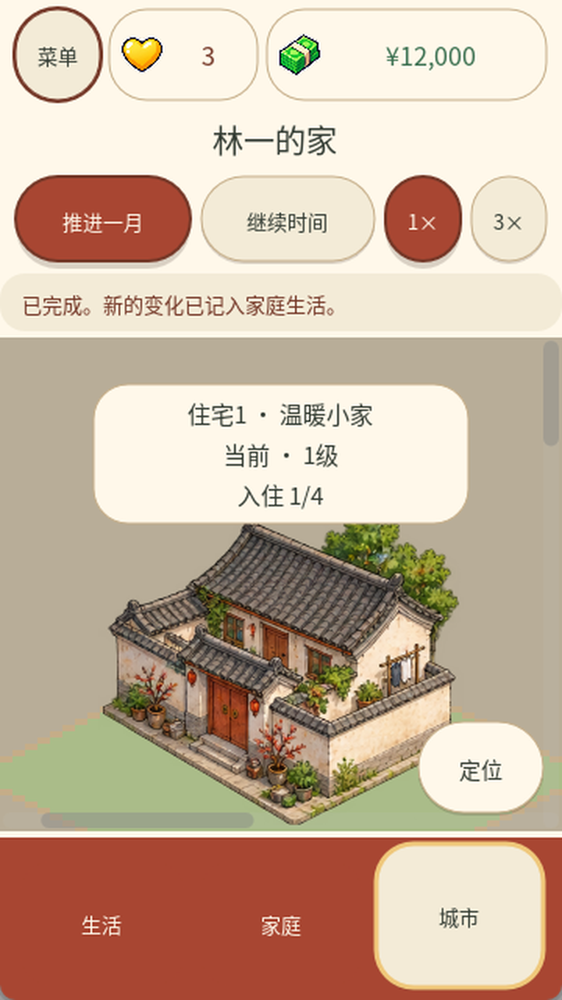
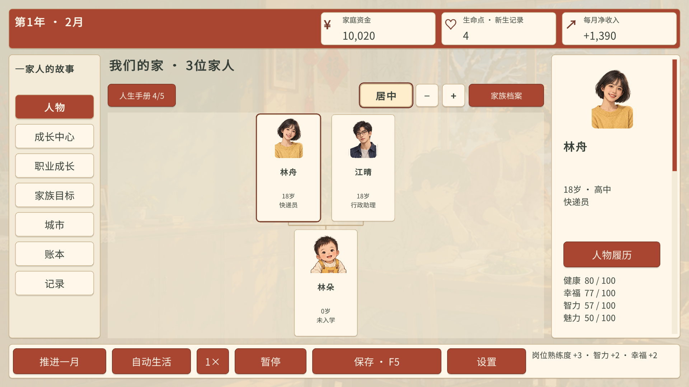
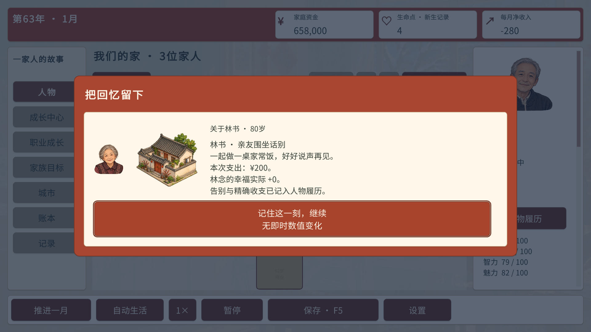

每个月都要算家里的账
工资、学费和日常开支进同一本账。日常按月推进，关键事件停下来结算，眼下的预算因此能影响下一步选择。


TAPTAP MAKER / 个人 AI 游戏实践
人生模拟 / 月度经营 / 家庭关系
十八岁那年，你要继续读书，还是先找份工作？一张账本记下每个月的选择，几十年后，家谱会告诉你这段人生接到了谁手里。

TapTap 公开测试 · Windows 本地试玩
按月安排读书、工作、家庭开销和住房。大事发生时，月份会暂停，等你读完选项、做决定再继续。家人出生、长大和离世后，仍能从家谱和个人履历回看他们做过的选择。
移动版画面来自 TapTap 公开游戏页。标有 Windows 的画面来自 0.19 试玩流程，人物与家庭数据均为虚构。
点击图片可查看原图。 多张画面可左右滑动，也可聚焦图库后使用方向键浏览。

0.19 版测试流程截图。画面中的人物和家庭数据均为虚构。点图可查看完整细节。



TAPTAP / 游戏入口
打开 TapTap 游戏页可查看移动版的公开测试入口。